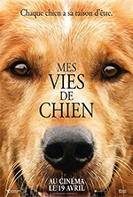
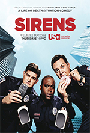
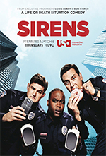

Votre bibliothèque
des films

Mes Vies De Chien
2017-1h41min
Réalisé par Lasse Hallström
Avec Britt Robertson, K.J. Apa, John Ortiz
Note : 3,4/5
Synopsis: Qui a dit que les animaux n'avaient pas d'âme ? Sûrement pas le petit Ethan, 8 ans, qui en 1962 s'embarque dans une aventure hors du commun en recueillant un chiot nommé Bailey. Au fil des années, Ethan noue des liens très forts avec son chien, présent à chaque étape importante de sa vie. Jusqu'au jour où, dévasté, il doit se résoudre à laisser partir Bailey, âgé et malade. Et si le départ de l'animal n'était en fait qu'un commencement ? Réincarné tour à tour en berger allemand, golden retriever ou labrador, vivant des aventures palpitantes comme chien de sauvetage ou la destinée sereine d’un petit chien de compagnie, Bailey va se découvrir, existence après existence, un but : retrouver son maître Ethan coûte que coûte…
Acteurs:
Bande Annonce:
| 3 Bonnes Raisons d'aller le voir | |
|---|---|
| Pour se rappeler que le chien est bel et bien le meilleur ami de l'homme | |
 Pour apprendre une belle leçon de vie Pour apprendre une belle leçon de vie |
|
 Pour vivre un instant de grande émotion, entre rire et larmes. Pour vivre un instant de grande émotion, entre rire et larmes. |
|
Si vous avez aimé , Ces films vous plairons surement
 
